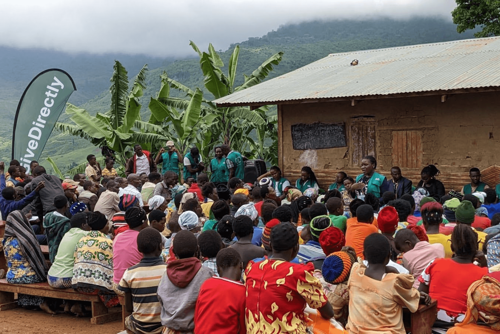

Our objective is to outline effective strategies and technological solutions to eradicate extreme poverty by 2030, in line with the United Nations Sustainable Development Goal 1 (No Poverty).

Visualizing mass sensitisation of communities towards how to end poverty.
The challenge: Current State of Global Poverty
Extreme poverty is defined as living on less than $2.15 a day. This section details the key facts, figures, and underlying causes...
Lack of Access: Limited access to basic services like healthcare and education.
Climate Vulnerability: How environmental changes disproportionately affect the poor.
Economic Inequality: The widening gap between the rich and the poor.

poor housing
Our Proposed Solutions & Initiatives
We believe a multi-faceted approach involving technology policy and community support is essential...
Digital Inclusion: Providing access to digital tools and internet for economic empowerment.
Microfinance Schemes: Supporting small-scale enterpreneurship in vulnerable communities.
Sustainable Agriculture: Implementing climate-resilient farming techniques.
For more detailed information, please see our full research paper.
.jpeg)